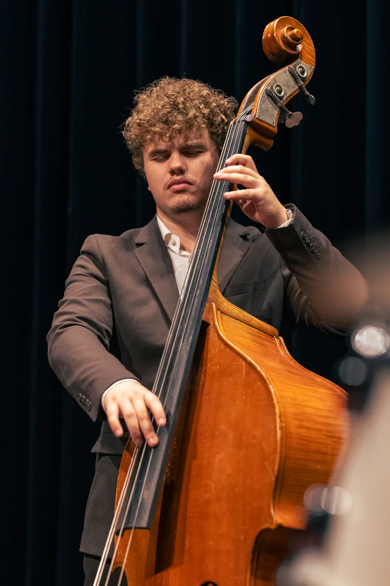
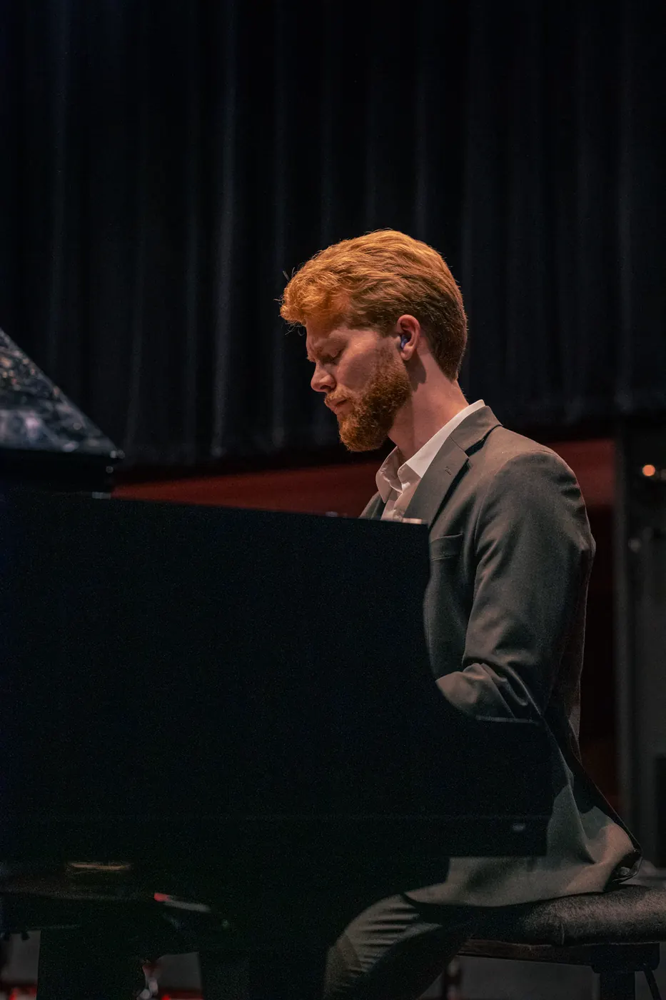

Repertoire
Wat we spelen
Geen eigen werk, maar de nummers die je kent. Bekende jazzklassiekers van grote artiesten, gespeeld in ons eigen arrangement voor trio. Een greep uit ons repertoire:
| Nummer | Artiest |
|---|---|
| {{r.t}} | {{r.a}} |
Een favoriet nummer in gedachten? Laat het ons weten